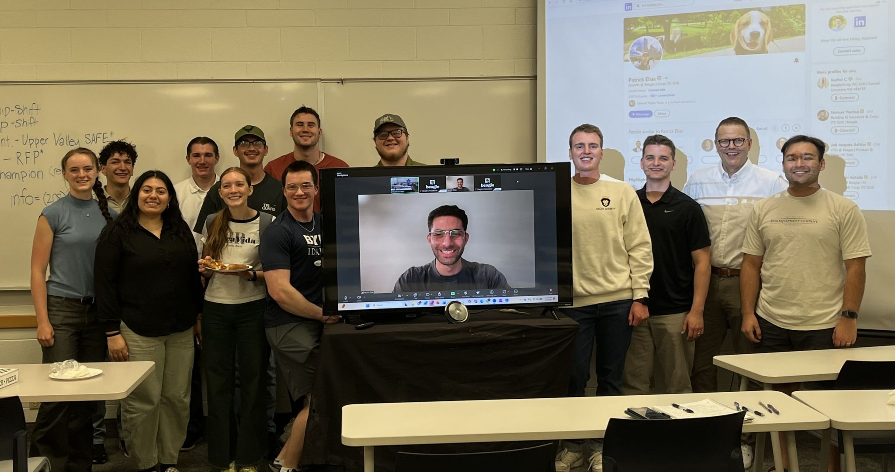
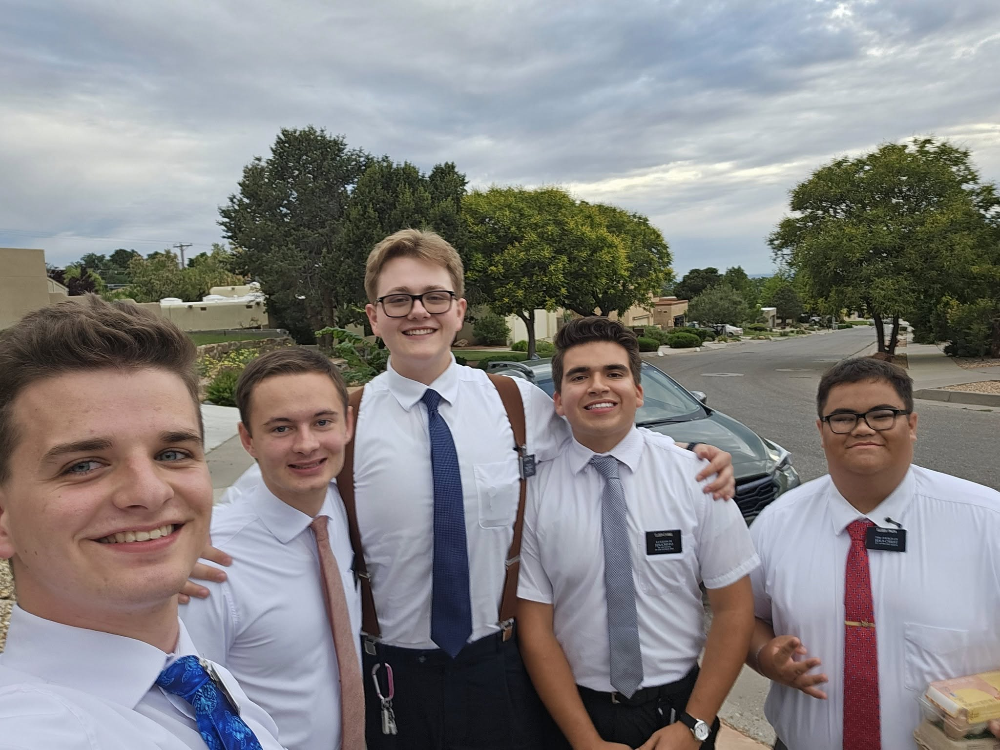
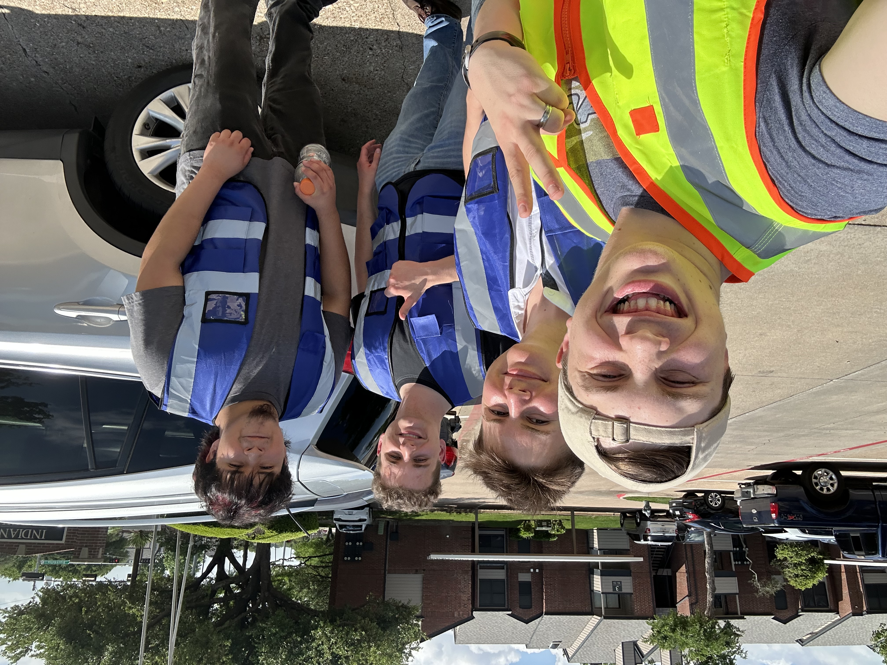

Sales Experience

BYU-I Sales Society Member
For over three months, I have been an active member of BYU-I's Sales Society. This society has weekly informational interviews with prominent figures. I have also attended expeditions outside of Rexburg to visit companies and have participated in multiple sales competitions. In this society, I have learned how to confidently ask questions that can lead to desirable outcomes, and communicate with others to effectively build relationships.

LDS Mission
For two years I went from town to town helping individuals grow their faith in God and help them make covenants with Him. How does this transfer to sales? No matter how I felt I had to go out there every day and give the message. I had to face much rejection in the day to day life, giving me the ability to handle rejection but still build from it. I also gained experience in public speaking, both in larger congregations and in small team settings. I had to opportunity to teach others and to lead other missionaries as well. This mission also taught me the process of a good sales pitch including skills such as interpersonal connection; creating concise, direct, and personable pitches; how to respect others while simultaneously offering something; and more.

Door to door
In between college semesters, I went on a door-to-door fiber internet blitz managed by Aidan Beal, a career salesman. Over this week, I learned how to convey the background and details of a product, and connect with potential customers on the basis of closing a deal. I also learned that I am very transparent with my customers, and will not withhold any information, ensuring customers will be satisfied with the product I sell.